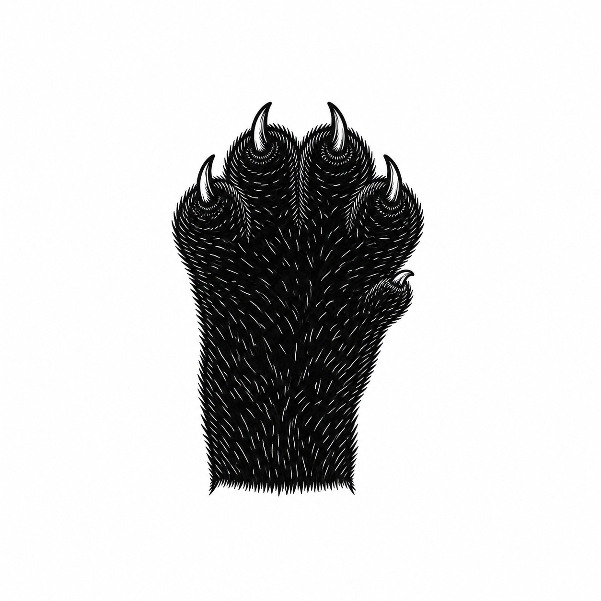
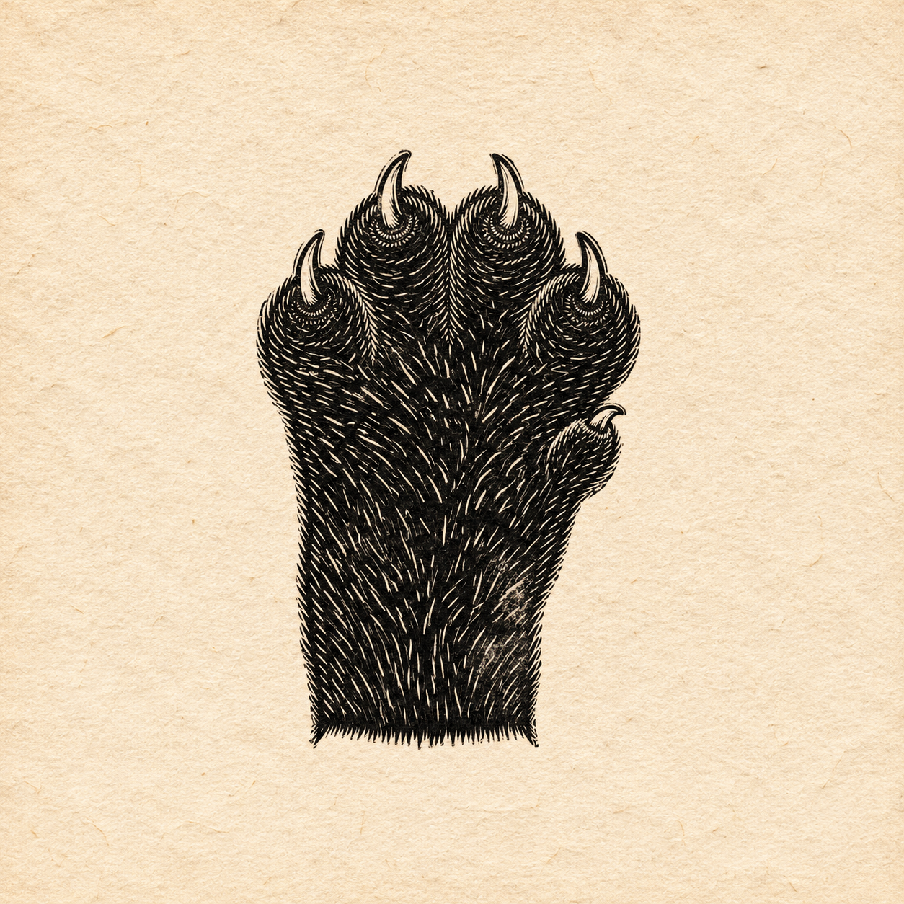
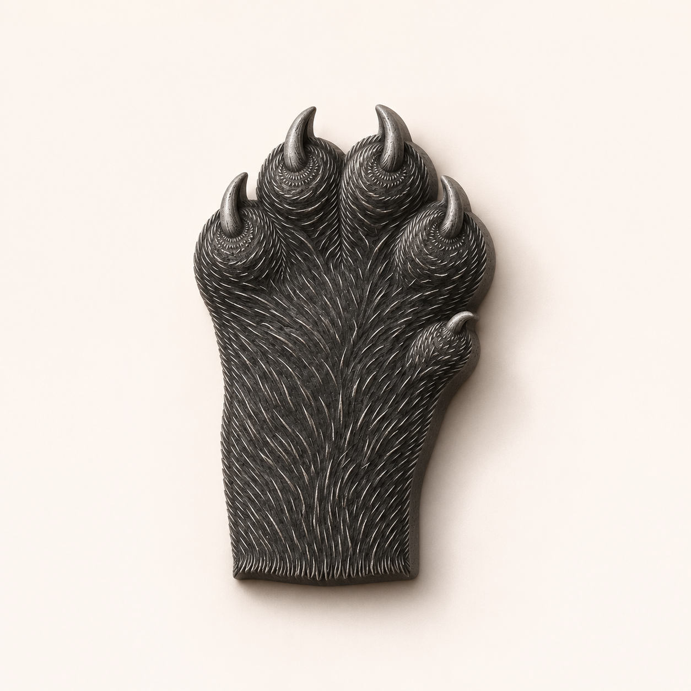

01
Real fur
Soft black fur, stray hairs and pale horn claws.
Full image ↓THE SAME DRAWINGS. A NEW DIMENSION.
The original illustrations, shaped into rounded reliefs. Drag to turn them.

01 / 04DRAG TO ROTATE · ARROW KEYS TO TURNThe ink is the original artwork. Depth and the plain reverse are interpretations of the drawing.
Preparing the relief…
THREE FINISHES / ONE PAW
Static style studies using the Production paw as a common reference.
Soft black fur, stray hairs and pale horn claws.
Full image ↓
Broken strokes, rubbed ink and the grain of paper.
Full image ↓
A darker, tactile object with engraved fur.
Full image ↓